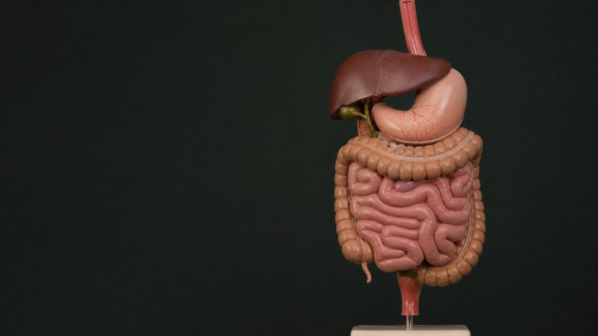
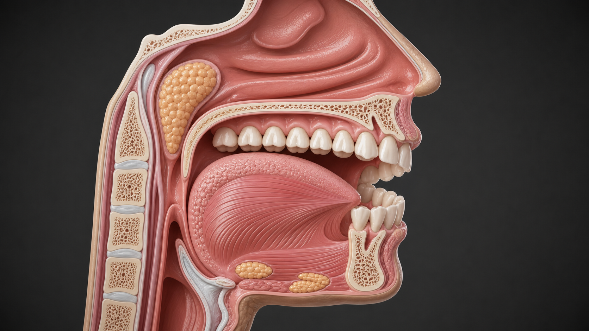
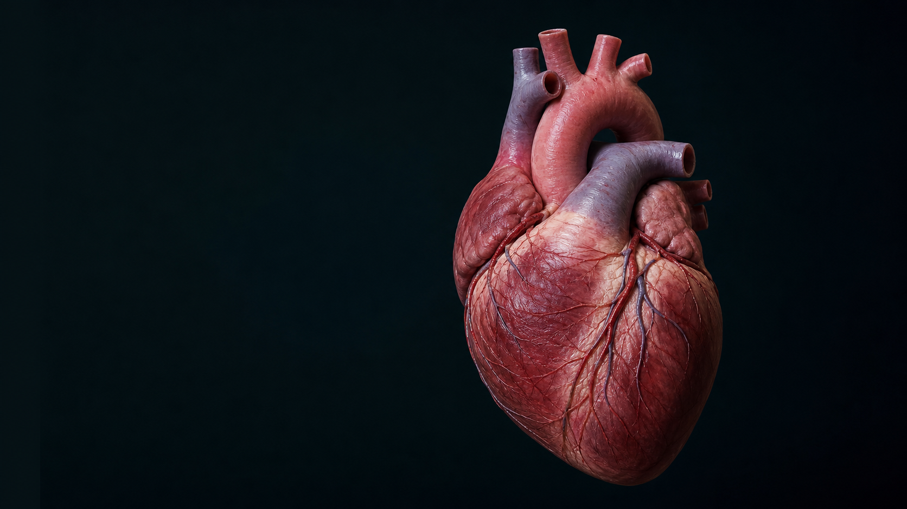
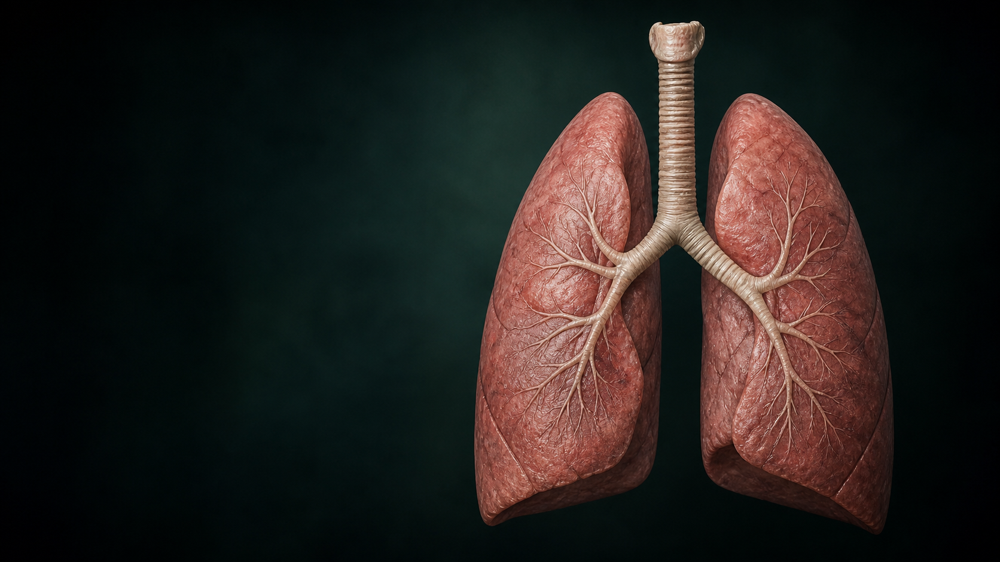
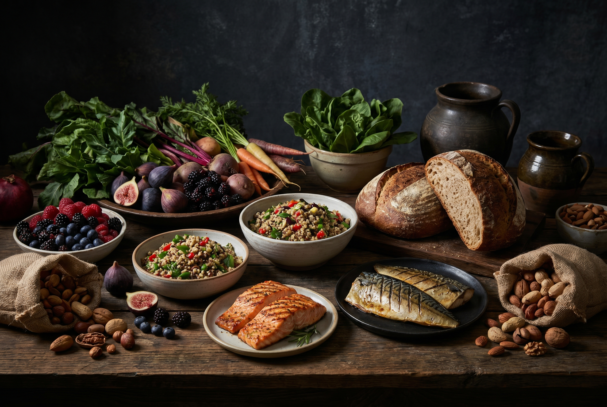
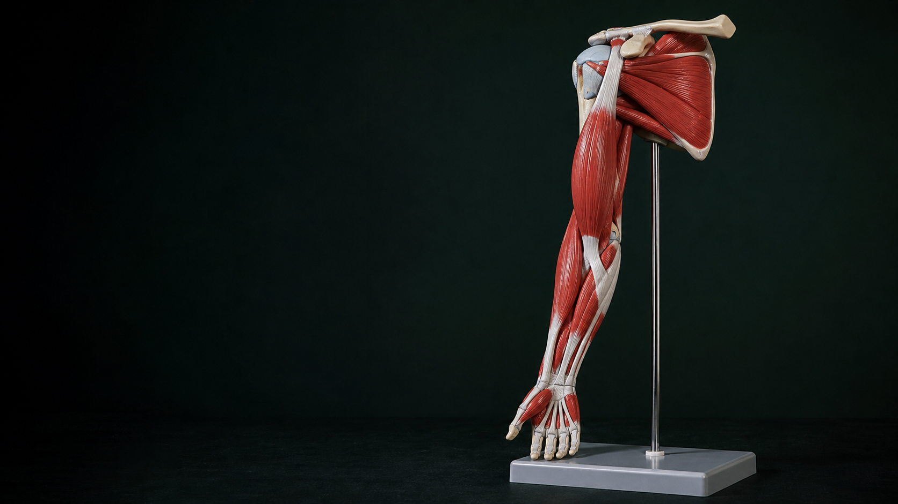
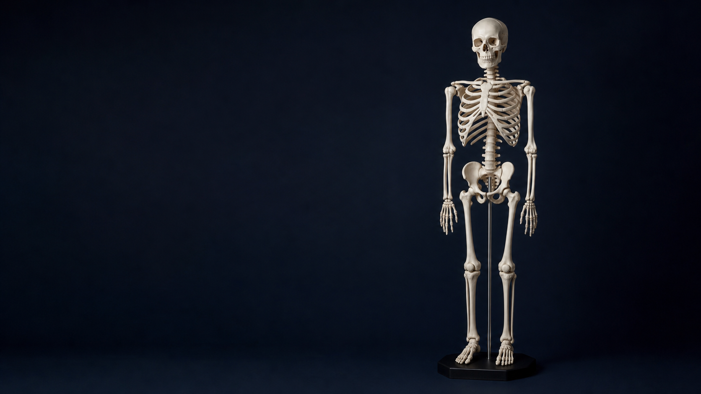
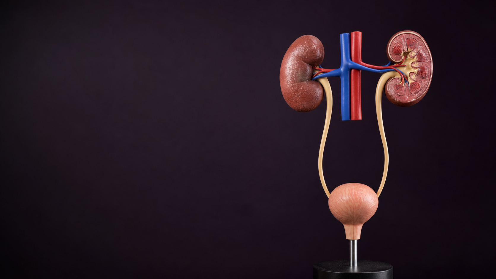
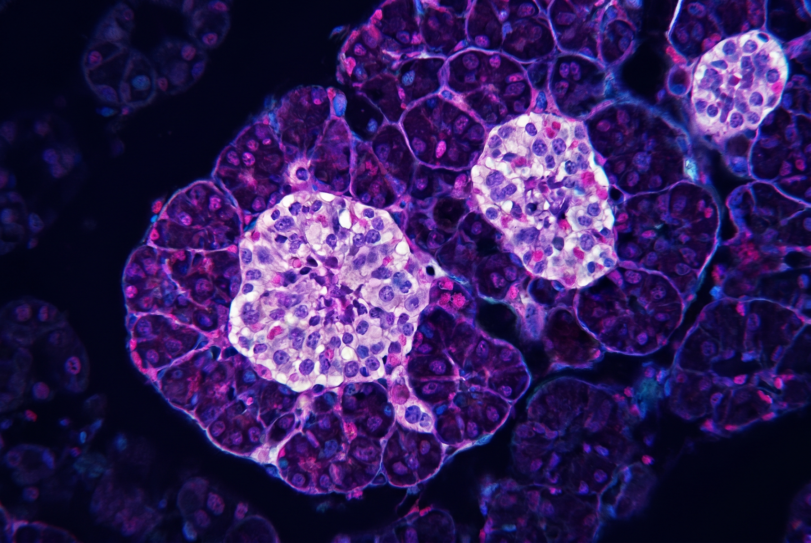

Sistemas y temas

DigestiónLa Digestión
El recorrido del alimento desde la boca hasta los intestinos. Órganos, enzimas y absorción de nutrientes.

MasticaciónLa Boca y la Masticación
El trabajo de incisivos, caninos, premolares y molares. La saliva, la amilasa y la formación del bolo alimenticio.

CirculaciónLa Circulación
El corazón, los vasos sanguíneos y la sangre. Cómo viajan el oxígeno y los nutrientes por todo el cuerpo.

RespiraciónLa Respiración
El recorrido del aire desde las fosas nasales hasta los alvéolos. Intercambio gaseoso y mecánica respiratoria.

AlimentaciónAlimentación Saludable
Nutrientes vs. alimentos. El plato saludable, vitaminas, minerales y claves para una buena alimentación.
 Endocrino
Endocrino
Sistema Endocrino
Las hormonas como mensajeros químicos. Insulina, adrenalina, hormonas sexuales y cambios en la pubertad.

MúsculosLos Músculos
Tipos de músculos: esqueléticos, lisos y cardíaco. Cómo se mueve el cuerpo y la importancia del ejercicio.

EsqueletoEl Esqueleto
Los 206 huesos del cuerpo humano. Funciones del esqueleto: sostén, protección, movimiento y producción de sangre.

RiñonesLos Riñones
Los riñones como filtros. Las nefronas, la formación de la orina y la importancia de la hidratación.

PáncreasEl Páncreas
Un órgano con doble función: digestiva (jugo pancreático) y endocrina (insulina y glucagón). Diabetes y cuidados.
El Aparato Urinario
Riñones, uréteres, vejiga y uretra. Cómo el cuerpo elimina los desechos a través de la orina.
Órganos de los sentidos
Vista, oído, gusto, olfato y tacto: órganos y receptores que nos permiten captar información del ambiente.
Sistema Nervioso
SNC y SNP. La neurona y el impulso nervioso. Encéfalo, arco reflejo y los cinco órganos de los sentidos.